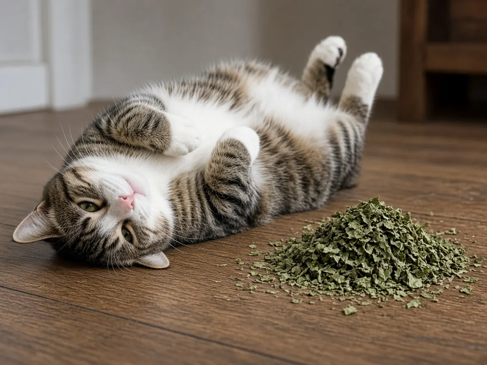

Why do cats like catnip?
Cats like catnip because its scent switches on the brain's own feel good chemistry, and the rubbing that follows seems to protect them from mosquitoes. Japanese and British researchers showed in 2021 that a catnip like compound raises beta endorphin in cats' blood, and that rubbing and rolling on the plant coats a cat's face and head in a chemical that repels mosquitoes. Not every cat joins in: roughly one in three domestic cats shows no catnip response at all.

What the catnip response looks like
When a responsive cat meets catnip (Nepeta cataria) or silver vine (Actinidia polygama), it typically licks and chews the leaves, rubs its cheeks and head against them, and rolls over on the ground. The same response has been seen in big cats and other felids, including lions, bobcats, an Amur leopard, jaguars and Eurasian lynx. People have described it for more than 300 years, but until recently nobody could say what it was for.
The scent triggers an opioid reward (Uenoyama et al., 2021)
Reiko Uenoyama, Masao Miyazaki and colleagues at Iwate University, working with Jane Hurst and Robert Beynon at the University of Liverpool, first tracked down which chemical in silver vine sets cats off. They found that an iridoid called nepetalactol is the main active compound in silver vine leaves. It is a close chemical cousin of nepetalactone, the active compound in catnip, and in their tests both produced longer face rubbing and rolling than the other plant compounds tried.
Next they measured what happens inside the cat. Plasma beta endorphin, one of the body's natural opioids, rose after cats were exposed to paper treated with nepetalactol but not after a control paper. When the team blocked mu opioid receptors with the drug naloxone, the classic rubbing response was suppressed. So the catnip high is real in a physiological sense: the smell leads to an opioid reward, which makes the behavior feel good and keeps the cat doing it.
The rubbing works as mosquito repellent
The same 2021 paper asked why such a strange behavior would evolve. Catnip oil was already known to repel mosquitoes when applied to people, so the researchers tested nepetalactol against Aedes albopictus, the Asian tiger mosquito. Nepetalactol repelled the mosquitoes, and rubbing on treated paper transferred the chemical onto the cats' faces and heads, where it went on repelling mosquitoes in the team's tests. The authors conclude that the rubbing and rolling response helps protect cats against mosquito bites, an example of a mammal using plant chemicals as a pest defense.
Why cats chew and shred the leaves (Uenoyama et al., 2022)
A follow up study in iScience looked at the licking and chewing part of the response. Cats swallowed little if any of the plant, which suggests they are not eating it. Instead, damaging the leaves sharply increased how much iridoid the plants released, and in silver vine it produced a more varied mix of iridoids. That richer cocktail from chewed silver vine repelled mosquitoes at lower concentrations. Cats responded for about as long to damaged silver vine as to damaged catnip, even though catnip released far more of its single main compound. In short, the chewing releases more repellent, and the rubbing puts it on the fur.
Why some cats ignore catnip (Bol et al., 2017; Todd, 1962)
Sebastiaan Bol and colleagues offered catnip, silver vine, Tatarian honeysuckle and valerian root to 100 domestic cats, several times each, alongside a control. About one in three cats did not respond to catnip, in line with earlier studies that reported 18 to 35 percent non responders. Almost 80 percent responded to silver vine and about half to honeysuckle and valerian. Usefully for owners, nearly 75 percent of the cats that ignored catnip did respond to silver vine, and about one in three responded to honeysuckle. Nine tigers were also tested and were either uninterested in silver vine or reacted negatively to it.
Whether a cat responds seems to be largely genetic. A 1962 breeding study by Neil Todd in the Journal of Heredity concluded that the catnip response is inherited as an autosomal dominant trait, a finding the 2021 Science Advances team cites as pointing to one or a few genes behind the response.
Is catnip safe for cats?
For most cats, sniffing and rolling in catnip is harmless. The ASPCA does list catnip as a plant that can cause vomiting and diarrhea if eaten, so offer small amounts and do not let a cat eat large quantities. Catnip is in our toxic plants and foods checker with that caution. A few practical points:
- Use it as enrichment. Bol and colleagues suggest smell based enrichment is an often overlooked way to keep indoor and shelter cats engaged. A pinch of dried catnip on a scratcher or in a toy works well.
- Try silver vine if catnip does nothing. In the 2017 study most catnip non responders reacted to silver vine powder made from dried fruit galls.
- Give space in multi cat homes. Some cats get rough or overexcited during the response, so offer catnip in separate spots rather than one shared pile. Our cat behavior guide covers signs of tension between cats.
- Do not rely on it as pest control. The mosquito findings explain the behavior in nature. They are not a substitute for vet recommended flea, tick and parasite prevention.
Every paper cited here is listed with its DOI on our cat research page. Related reading: why do cats like boxes? and why do cats purr?.
Cats and catnip FAQ
Why do cats go crazy for catnip?
Its scent compounds raise beta endorphin, a natural opioid, in a cat's blood. Blocking opioid receptors suppresses the rubbing response, so the behavior is driven by a real reward.
Why does my cat not react to catnip?
About one in three cats does not respond, and the trait appears to be inherited. Many of those cats do respond to silver vine.
Does catnip really repel mosquitoes on cats?
In 2021 experiments, rubbing on the catnip like compound nepetalactol transferred it to cats' faces and heads, where it repelled Asian tiger mosquitoes.
Can cats eat catnip?
Sniffing, rolling and a little chewing are fine for most cats. The ASPCA notes that eating catnip can cause vomiting and diarrhea, so keep amounts small.
Sources
- Uenoyama R., Miyazaki T., Hurst J.L., Beynon R.J., Adachi M., Murooka T., Onoda I., Miyazawa Y., Katayama R., Yamashita T., Kaneko S., Nishikawa T., Miyazaki M. (2021) The characteristic response of domestic cats to plant iridoids allows them to gain chemical defense against mosquitoes. Science Advances 7(4):eabd9135. doi:10.1126/sciadv.abd9135
- Uenoyama R., Miyazaki T., Adachi M., Nishikawa T., Hurst J.L., Miyazaki M. (2022) Domestic cat damage to plant leaves containing iridoids enhances chemical repellency to pests. iScience 25(7):104455. doi:10.1016/j.isci.2022.104455
- Bol S., Caspers J., Buckingham L., Anderson-Shelton G.D., Ridgway C., Buffington C.A.T., Schulz S., Bunnik E.M. (2017) Responsiveness of cats (Felidae) to silver vine (Actinidia polygama), Tatarian honeysuckle (Lonicera tatarica), valerian (Valeriana officinalis) and catnip (Nepeta cataria). BMC Veterinary Research 13:70. doi:10.1186/s12917-017-0987-6
- Todd N.B. (1962) Inheritance of the catnip response in domestic cats. Journal of Heredity 53(2):54 to 56. doi:10.1093/oxfordjournals.jhered.a107121
- ASPCA Animal Poison Control: Catnip
Cite this page
Students and teachers are welcome to cite this page. Add your access date if your teacher or style guide asks for one.
APA (7th ed.)
MeowWise. (2026, October 19). Why do cats like catnip? https://meowwise.com/blog/why-do-cats-like-catnip.html
MLA (9th ed.)
“Why do cats like catnip?” MeowWise, 19 Oct. 2026, meowwise.com/blog/why-do-cats-like-catnip.html.
Chicago (bibliography)
MeowWise. “Why do cats like catnip?” Last modified October 19, 2026. https://meowwise.com/blog/why-do-cats-like-catnip.html.
General education, not veterinary advice. If you are worried about your cat, contact your veterinarian; in an emergency, go to the nearest emergency vet.